Individual EDA: Looking at
NY SPARCS Inpatient Discharge Data
Overview
This EDA covers both project datasets and the bridge connecting them: - NY SPARCS Inpatient Discharge 2021 — 103K respiratory discharge records from New York State hospitals with charges, costs, length of stay, insurance, and severity. Used to measure who pays more and arrives sicker.
I will analyze clinical severity and outcomes across racial and ethnic groups using the NY SPARCS Inpatient Discharge 2021 dataset, filtered to respiratory diagnoses. The central question is whether Black, White, and Hispanic/Latino patients arrive at New York State hospitals with different levels of illness severity, experience different lengths of stay, and face different in-hospital mortality rates — and whether those differences persist after controlling for age.
The analysis is structured in three parts. First, I characterize the overall patient population and examine how severity of illness is distributed across racial groups. Second, I look at length of stay and in-hospital mortality as downstream clinical outcomes of that severity. Third, I stratify all findings by age group to remove the most important demographic confounder: White respiratory patients skew older, and older patients tend to arrive sicker regardless of race. And finally, ask whether the disparities hold within the same life stage.
Setup
Load/Clean
SPARCS is pulled directly from the NY Health Data API, filtered server-side to respiratory diagnoses (CCSR codes beginning with “RSP”). No file is saved to disk. Race and ethnicity are combined into a single race_eth variable using an ethnicity-first strategy: Hispanic patients are classified as Hispanic/Latino regardless of their reported race code, which is necessary because SPARCS frequently records Hispanic patients under multiple race categories.
Show code
sparcs_raw <- read_csv(
"https://health.data.ny.gov/resource/tg3i-cinn.csv?$where=ccsr_diagnosis_code%20like%20%27RSP%25%27&$limit=500000",
show_col_types = FALSE
)
sparcs <- sparcs_raw |>
filter(str_starts(ccsr_diagnosis_code, "RSP")) |>
mutate(
length_of_stay = as.numeric(length_of_stay),
total_charges = as.numeric(total_charges),
total_costs = as.numeric(total_costs),
race_eth = case_when(
ethnicity == "Spanish/Hispanic" ~ "Hispanic/Latino",
race == "Black/African American" &
ethnicity == "Not Span/Hispanic" ~ "Black",
race == "White" &
ethnicity == "Not Span/Hispanic" ~ "White",
TRUE ~ NA_character_
),
age_group = case_when(
age_group %in% c("18 to 29", "30 to 49") ~ "18–49",
age_group == "50 to 69" ~ "50–69",
age_group == "70 or Older" ~ "70+",
TRUE ~ NA_character_
),
insurance = case_when(
str_detect(payment_typology_1, regex("medicaid", ignore_case = TRUE)) ~ "Medicaid",
str_detect(payment_typology_1, regex("medicare", ignore_case = TRUE)) ~ "Medicare",
str_detect(payment_typology_1, regex("private", ignore_case = TRUE)) ~ "Private",
str_detect(payment_typology_1, regex("self", ignore_case = TRUE)) ~ "Self-Pay",
TRUE ~ "Other"
),
severity = factor(
apr_severity_of_illness,
levels = c("Minor", "Moderate", "Major", "Extreme")
),
severity_code = apr_severity_of_illness_code,
risk_of_mortality = factor(
apr_risk_of_mortality,
levels = c("Minor", "Moderate", "Major", "Extreme")
),
died = str_detect(
patient_disposition,
regex("expired|died", ignore_case = TRUE)
)
) |>
filter(!is.na(race_eth))
glimpse(sparcs)Rows: 87,175
Columns: 39
$ hospital_service_area <chr> "New York City", "New York City", "New …
$ hospital_county <chr> "Bronx", "Queens", "Manhattan", "Bronx"…
$ operating_certificate_number <chr> "7000002", "7003000", "7002024", "70000…
$ permanent_facility_id <chr> "001165", "001626", "001456", "001169",…
$ facility_name <chr> "Jacobi Medical Center", "Elmhurst Hosp…
$ age_group <chr> "18–49", "18–49", "18–49", "18–49", "18…
$ zip_code_3_digits <chr> "104", "113", "100", "104", "109", "115…
$ gender <chr> "F", "M", "M", "M", "F", "M", "F", "F",…
$ race <chr> "Other Race", "Other Race", "Other Race…
$ ethnicity <chr> "Spanish/Hispanic", "Spanish/Hispanic",…
$ length_of_stay <dbl> 2, 3, 1, 2, 2, 1, 12, 2, 2, 3, 2, 18, 3…
$ type_of_admission <chr> "Emergency", "Emergency", "Elective", "…
$ patient_disposition <chr> "Home or Self Care", "Home or Self Care…
$ discharge_year <dbl> 2021, 2021, 2021, 2021, 2021, 2021, 202…
$ ccsr_diagnosis_code <chr> "RSP001", "RSP001", "RSP001", "RSP001",…
$ ccsr_diagnosis_description <chr> "Sinusitis", "Sinusitis", "Sinusitis", …
$ ccsr_procedure_code <chr> NA, NA, "MST018", "ENT008", NA, "ENT017…
$ ccsr_procedure_description <chr> NA, NA, "BONE EXCISION", "NASAL AND SIN…
$ apr_drg_code <chr> "113", "113", "089", "098", "113", "098…
$ apr_drg_description <chr> "INFECTIONS OF UPPER RESPIRATORY TRACT"…
$ apr_mdc_code <chr> "03", "03", "03", "03", "03", "03", "03…
$ apr_mdc_description <chr> "DISEASES AND DISORDERS OF THE EAR, NOS…
$ apr_severity_of_illness_code <dbl> 2, 2, 2, 1, 1, 1, 3, 2, 2, 2, 2, 2, 2, …
$ apr_severity_of_illness <chr> "Moderate", "Moderate", "Moderate", "Mi…
$ apr_risk_of_mortality <chr> "Minor", "Minor", "Minor", "Minor", "Mi…
$ apr_medical_surgical <chr> "Medical", "Medical", "Surgical", "Surg…
$ payment_typology_1 <chr> "Medicaid", "Medicaid", "Medicaid", "Pr…
$ payment_typology_2 <chr> NA, NA, "Medicaid", NA, NA, "Self-Pay",…
$ payment_typology_3 <chr> NA, NA, "Self-Pay", NA, NA, NA, "Self-P…
$ birth_weight <chr> NA, NA, NA, NA, NA, NA, NA, NA, NA, NA,…
$ emergency_department_indicator <chr> "Y", "Y", "N", "N", "Y", "N", "N", "N",…
$ total_charges <dbl> 22932.90, 24601.68, 55654.06, 91238.45,…
$ total_costs <dbl> 13611.55, 11434.76, 17104.89, 17290.36,…
$ race_eth <chr> "Hispanic/Latino", "Hispanic/Latino", "…
$ insurance <chr> "Medicaid", "Medicaid", "Medicaid", "Pr…
$ severity <fct> Moderate, Moderate, Moderate, Minor, Mi…
$ severity_code <dbl> 2, 2, 2, 1, 1, 1, 3, 2, 2, 2, 2, 2, 2, …
$ risk_of_mortality <fct> Minor, Minor, Minor, Minor, Minor, Mino…
$ died <lgl> FALSE, FALSE, FALSE, FALSE, FALSE, FALS…After filtering to respiratory diagnoses and the three focal racial groups, the dataset contains 87,175 discharge records from New York State hospitals in 2021. Each row represents one inpatient discharge. The key clinical variables are severity (APR-DRG severity of illness, a four-level ordinal from Minor to Extreme), risk_of_mortality (the corresponding APR-DRG mortality risk score), length_of_stay, and died (whether the patient died during the admission).
Structure and Missingness
Show code
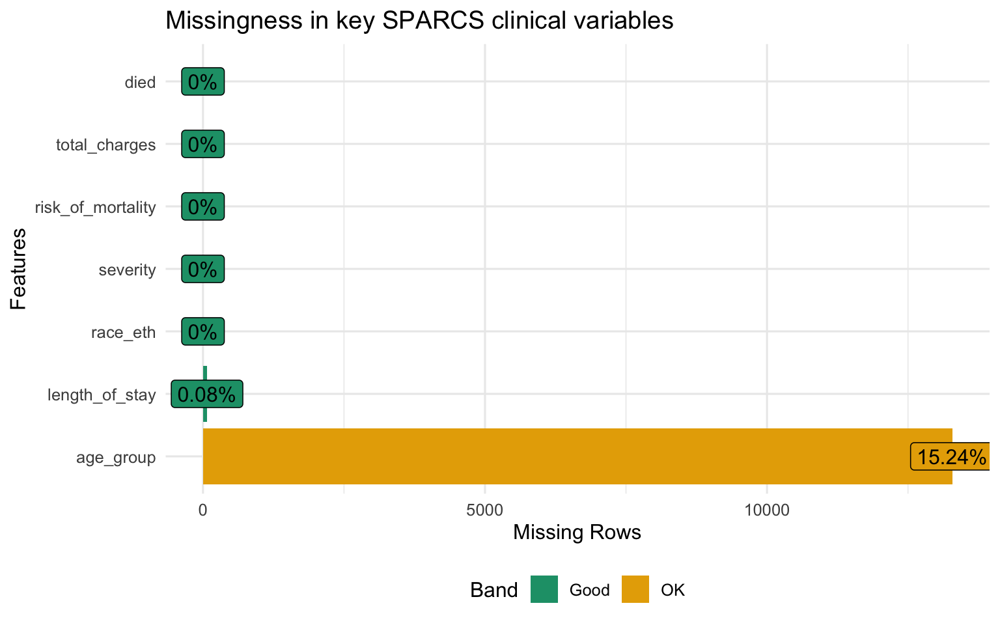
Missingness is low across all key variables. severity and risk_of_mortality are coded at discharge from the patient record and are nearly complete. length_of_stay and died are administrative fields populated for every inpatient record. The analysis proceeds on the full dataset without imputation.
Part 1 — Severity of Illness
Overall Severity Distribution
Show code
sparcs |>
filter(!is.na(severity)) |>
count(race_eth, severity) |>
group_by(race_eth) |>
mutate(pct = n / sum(n)) |>
ungroup() |>
ggplot(aes(x = race_eth, y = pct, fill = severity)) +
geom_col(position = "fill", alpha = 0.85) +
scale_y_continuous(labels = percent_format()) +
scale_fill_brewer(palette = "YlOrRd", direction = 1) +
labs(
title = "Severity of illness distribution by race / ethnicity",
subtitle = "Darker = more severe; share of Major and Extreme cases differs by group",
x = NULL, y = "Proportion of discharges", fill = "Severity"
)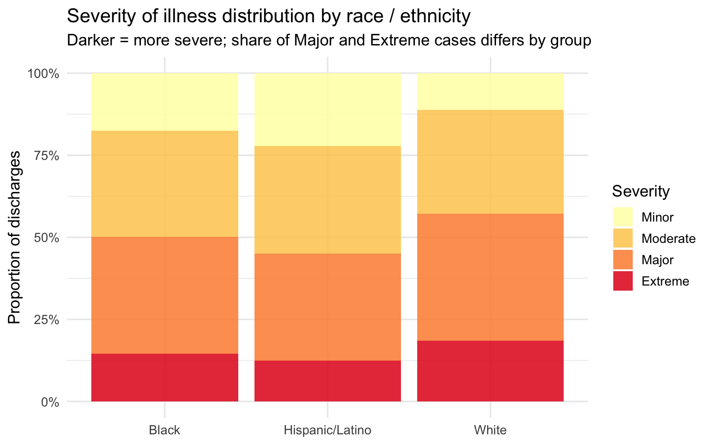
Show code
sparcs |>
filter(!is.na(severity_code)) |>
group_by(race_eth) |>
summarise(
mean_sev = mean(severity_code, na.rm = TRUE),
se = sd(severity_code, na.rm = TRUE) / sqrt(n()),
n = n()
) |>
mutate(
lo = mean_sev - 1.96 * se,
hi = mean_sev + 1.96 * se,
race_eth = fct_reorder(race_eth, mean_sev)
) |>
ggplot(aes(x = race_eth, y = mean_sev, fill = race_eth)) +
geom_col(alpha = 0.85, show.legend = FALSE) +
geom_errorbar(aes(ymin = lo, ymax = hi), width = 0.2, linewidth = 0.8) +
geom_text(aes(label = round(mean_sev, 2)), vjust = -0.9, size = 4.2) +
scale_fill_brewer(palette = "Set1") +
scale_y_continuous(expand = expansion(mult = c(0, 0.15))) +
labs(
title = "Mean APR severity score by race / ethnicity",
subtitle = "Scale: 1 = Minor, 2 = Moderate, 3 = Major, 4 = Extreme; error bars = 95% CI",
x = NULL, y = "Mean severity score"
)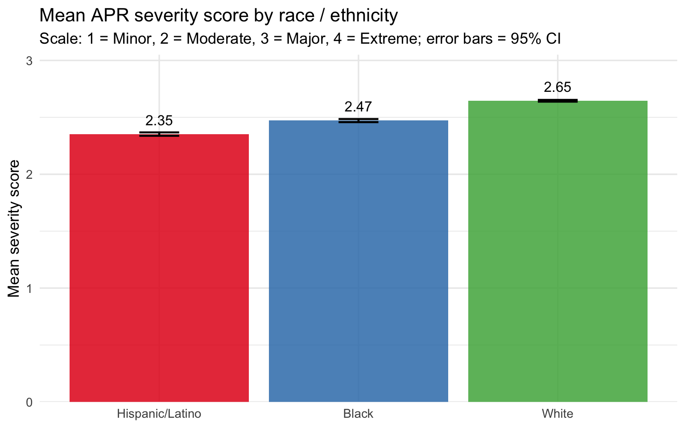
The severity distribution and mean score plots tell a consistent story: Black and Hispanic/Latino patients arrive at the hospital with higher recorded illness severity than White patients on average. The stacked bars show this as a shift in the composition of discharges — a larger share of Major and Extreme cases among Black patients, a larger share of Minor and Moderate cases among White patients. The mean score bar chart quantifies the gap, and the confidence intervals — tight given the large sample size — confirm it is not a sampling artifact.
The key caveat is age. The severity score is assigned by administrative coders at discharge and reflects the full clinical picture at that point, but White patients skewing older means they have more years of accumulated comorbidities. The age-stratified analysis below tests whether the severity gap is an artifact of that demographic difference or whether it holds within the same age band.
Risk of Mortality Distribution
Show code
sparcs |>
filter(!is.na(risk_of_mortality)) |>
count(race_eth, risk_of_mortality) |>
group_by(race_eth) |>
mutate(pct = n / sum(n)) |>
ungroup() |>
ggplot(aes(x = race_eth, y = pct, fill = risk_of_mortality)) +
geom_col(position = "fill", alpha = 0.85) +
scale_y_continuous(labels = percent_format()) +
scale_fill_brewer(palette = "OrRd", direction = 1) +
labs(
title = "APR risk of mortality distribution by race / ethnicity",
subtitle = "Share of Major and Extreme mortality-risk cases differs across groups",
x = NULL, y = "Proportion of discharges", fill = "Risk of Mortality"
)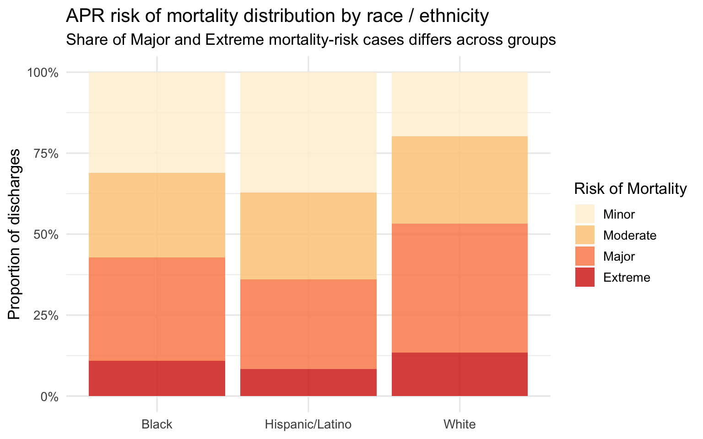
The APR risk of mortality score is a related but distinct variable from severity — it is calibrated specifically to predict in-hospital death rather than to summarize overall illness burden. The distribution mirrors the severity pattern: Black patients show a higher share of Major and Extreme mortality risk, White patients show a higher share of Minor risk. Hispanic/Latino patients again fall between the two. Because risk of mortality is a predictive score derived from diagnosis and procedure codes, a higher score means the clinical record at discharge codes as more life-threatening — not simply that the patient arrived older or sicker due to age.
Part 2 — Clinical Outcomes
In-Hospital Mortality
Show code
sparcs |>
filter(!is.na(died)) |>
group_by(race_eth) |>
summarise(
n = n(),
n_died = sum(died, na.rm = TRUE),
mortality_rate = n_died / n
) |>
mutate(race_eth = fct_reorder(race_eth, mortality_rate)) |>
ggplot(aes(x = race_eth, y = mortality_rate, fill = race_eth)) +
geom_col(alpha = 0.85, show.legend = FALSE) +
geom_text(aes(label = percent(mortality_rate, accuracy = 0.1)),
vjust = -0.4, size = 4.2) +
scale_y_continuous(labels = percent_format(),
expand = expansion(mult = c(0, 0.15))) +
scale_fill_brewer(palette = "Set1") +
labs(
title = "In-hospital mortality rate by race / ethnicity",
subtitle = "Percentage of respiratory discharges that resulted in death",
x = NULL, y = "Mortality rate"
)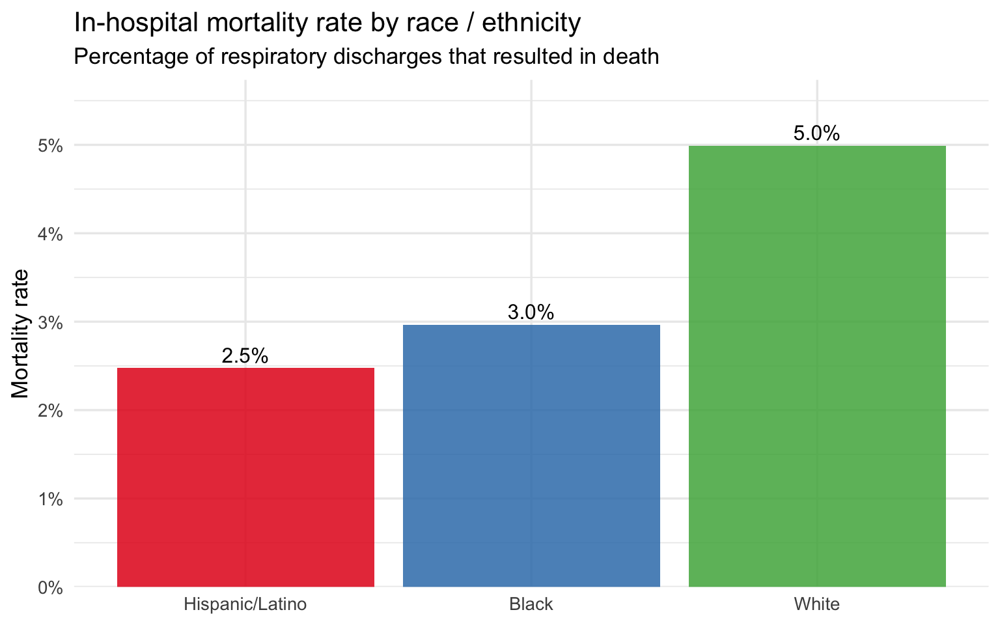
The raw in-hospital mortality rate follows the same racial ordering as severity: the group with the highest mean severity score has the highest mortality rate, and the group with the lowest has the lowest. This ordering is consistent with the severity findings but does not on its own establish that race is the driver — age and severity are mediating variables that must be controlled before any causal claim can be made. The next plot addresses this directly.
Length of Stay by Race
Show code
sparcs |>
filter(!is.na(length_of_stay)) |>
mutate(race_eth = fct_reorder(race_eth, length_of_stay, median)) |>
ggplot(aes(x = race_eth, y = length_of_stay, fill = race_eth)) +
geom_boxplot(outlier.alpha = 0.04, alpha = 0.8) +
scale_y_continuous(limits = c(0, 30)) +
scale_fill_brewer(palette = "Set1") +
labs(
title = "Length of stay by race / ethnicity (capped at 30 days)",
subtitle = "Boxes show median and interquartile range; outliers beyond 30 days suppressed",
x = NULL, y = "Days"
) +
theme(legend.position = "none")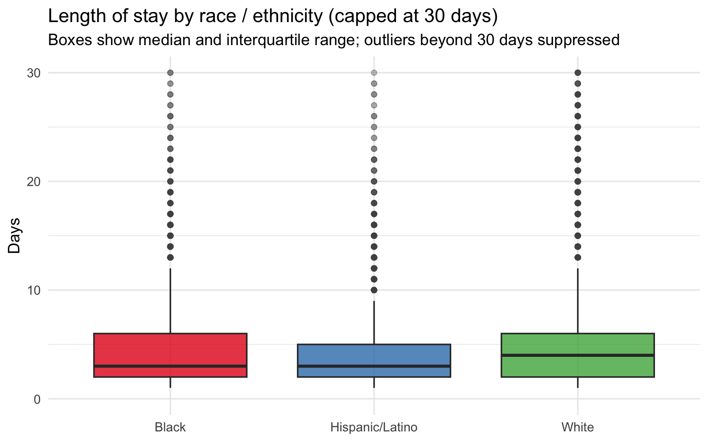
Length of Stay within Severity Level
Show code
sparcs |>
filter(!is.na(length_of_stay), !is.na(severity)) |>
group_by(race_eth, severity) |>
summarise(median_los = median(length_of_stay, na.rm = TRUE), .groups = "drop") |>
ggplot(aes(x = severity, y = median_los, color = race_eth, group = race_eth)) +
geom_line(linewidth = 1.1) +
geom_point(size = 3) +
geom_text_repel(aes(label = round(median_los, 1)), size = 3.2, show.legend = FALSE) +
scale_color_brewer(palette = "Set1") +
labs(
title = "Median length of stay by severity level and race / ethnicity",
subtitle = "Within-severity comparison removes illness burden as a confounder",
x = "Severity of illness", y = "Median LOS (days)", color = "Race / Ethnicity"
)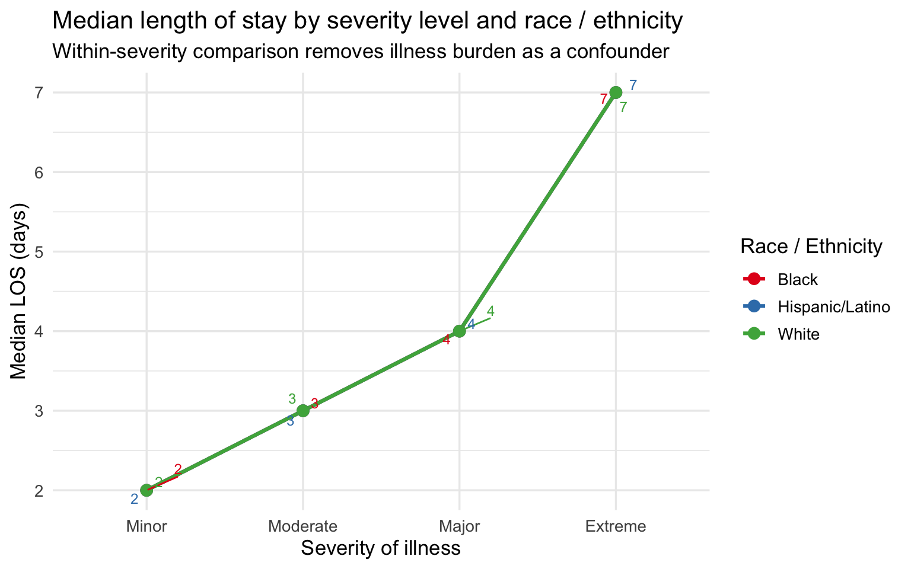
The within-severity comparison is the strongest single plot in this section. By holding severity constant, it removes the most obvious alternative explanation for the LOS gap — that Black and Hispanic/Latino patients simply arrive sicker. Within every severity category, Black and Hispanic/Latino patients spend as many or more days in the hospital as White patients at the same illness level. The gap is not driven by severity alone. This raises the question of what else might explain it: differences in treatment course, delays in response to treatment, comorbidity burden not fully captured by the APR severity score, or upstream clinical failures that caused the condition to progress further before the patient sought care. ### Severity Heatmap by Diagnosis and Race
Show code
top_dx <- sparcs |>
count(ccsr_diagnosis_description) |>
slice_max(n, n = 10) |>
pull(ccsr_diagnosis_description)
sparcs |>
filter(ccsr_diagnosis_description %in% top_dx, !is.na(severity_code)) |>
group_by(race_eth, ccsr_diagnosis_description) |>
summarise(mean_sev = mean(severity_code, na.rm = TRUE), .groups = "drop") |>
ggplot(aes(x = race_eth, y = ccsr_diagnosis_description, fill = mean_sev)) +
geom_tile(color = "white") +
geom_text(aes(label = round(mean_sev, 2)), size = 3.2) +
scale_fill_distiller(palette = "YlOrRd", direction = 1,
limits = c(1, 4)) +
labs(
title = "Mean severity score by race and top 10 diagnoses",
subtitle = "Comparing same diagnosis across groups controls for case-mix differences",
x = NULL, y = NULL, fill = "Mean severity"
) +
theme(axis.text.y = element_text(size = 9))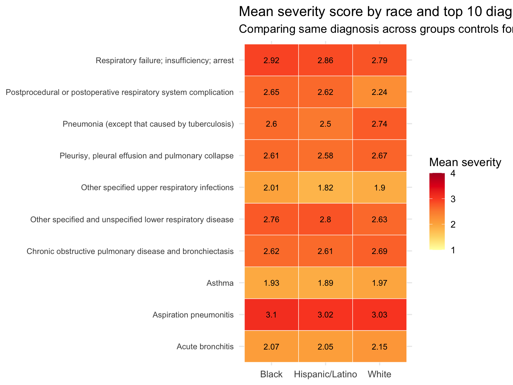
The heatmap is a diagnosis-controlled comparison: it asks whether, for the same respiratory condition, Black and Hispanic/Latino patients present at higher severity than White patients. Cells in the same row hold the diagnosis constant, so differences across columns reflect patient-level variation rather than diagnosis-mix. Where a racial group shows consistently darker cells across diagnoses — not just for one condition but for many — the severity gap is more likely to reflect something about the patient’s journey to the hospital (access to care, delays in treatment, or upstream clinical failures) than the type of condition they were admitted for.
Part 3 — Age-Stratified Analysis
Age is the most important confounder in this dataset. White respiratory patients skew older, and older patients accumulate more comorbidities, generate higher severity scores, and are more likely to die during admission. Stratifying by age band tests whether the racial gradients in severity and outcomes hold within the same life stage — or whether they disappear once age is controlled.
Show code
sparcs_age <- sparcs |>
filter(!is.na(race_eth), !is.na(age_group)) |>
group_by(race_eth, age_group) |>
summarise(
n_discharges = n(),
mean_severity = mean(severity_code, na.rm = TRUE),
median_los = median(length_of_stay, na.rm = TRUE),
mortality_rate = mean(died, na.rm = TRUE),
pct_major_ext = mean(severity %in% c("Major", "Extreme"), na.rm = TRUE),
.groups = "drop"
)
sparcs_age |>
mutate(
mean_severity = round(mean_severity, 2),
median_los = round(median_los, 1),
mortality_rate = percent(mortality_rate, accuracy = 0.1),
pct_major_ext = percent(pct_major_ext, accuracy = 0.1)
) |>
arrange(age_group, race_eth) |>
knitr::kable(
col.names = c("Race", "Age group", "N", "Mean severity",
"Median LOS", "Mortality rate", "% Major / Extreme"),
caption = "**Table 2. Age-stratified clinical outcomes by race — SPARCS respiratory discharges**"
)| Race | Age group | N | Mean severity | Median LOS | Mortality rate | % Major / Extreme |
|---|---|---|---|---|---|---|
| Black | 18–49 | 3068 | 2.32 | 3 | 1.3% | 43.1% |
| Hispanic/Latino | 18–49 | 2603 | 2.22 | 3 | 0.8% | 39.4% |
| White | 18–49 | 4503 | 2.36 | 3 | 1.5% | 45.3% |
| Black | 50–69 | 7263 | 2.63 | 4 | 3.0% | 55.2% |
| Hispanic/Latino | 50–69 | 4815 | 2.56 | 4 | 2.3% | 52.1% |
| White | 50–69 | 17261 | 2.68 | 4 | 3.7% | 58.3% |
| Black | 70+ | 4222 | 2.78 | 5 | 6.6% | 62.3% |
| Hispanic/Latino | 70+ | 3997 | 2.69 | 4 | 6.3% | 57.4% |
| White | 70+ | 26160 | 2.79 | 4 | 7.4% | 62.9% |
Cell counts range from several thousand to over twenty thousand per race × age combination, so all estimates are stable. The 18–49 band tests whether disparities appear before age-related comorbidities accumulate — this is the cleanest comparison because older patients have more accumulated health burden by definition. The 50–69 band captures patients with real respiratory disease burden but before the Medicare transition dominates. The 70+ band is where age-related confounding is strongest — making any residual gap in this group the hardest to explain away.
Severity by Age Group and Race
Show code
sparcs_age |>
ggplot(aes(x = age_group, y = mean_severity,
color = race_eth, group = race_eth)) +
geom_line(linewidth = 1.1) +
geom_point(size = 3) +
geom_text_repel(aes(label = round(mean_severity, 2)),
size = 3.2, show.legend = FALSE) +
scale_color_brewer(palette = "Set1") +
labs(
title = "Mean APR severity score by age group and race / ethnicity",
subtitle = "Age-controlled comparison: does the severity gap hold within the same life stage?",
x = "Age group", y = "Mean severity score (1–4)", color = "Race / Ethnicity"
)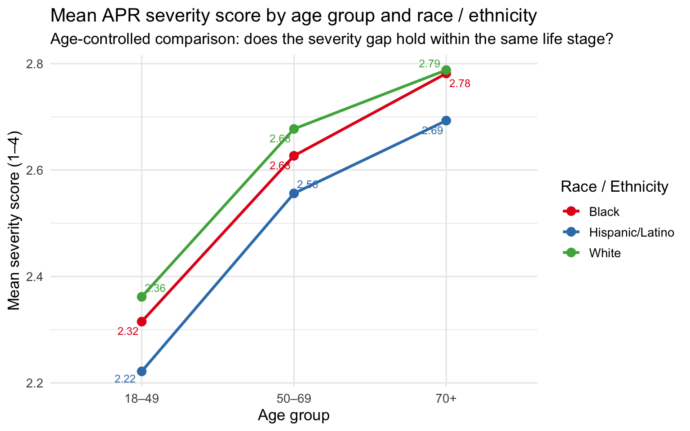
Mortality Rate by Age Group and Race
Show code
sparcs_age |>
ggplot(aes(x = age_group, y = mortality_rate,
color = race_eth, group = race_eth)) +
geom_line(linewidth = 1.1) +
geom_point(size = 3) +
geom_text_repel(aes(label = percent(mortality_rate, accuracy = 0.1)),
size = 3.2, show.legend = FALSE) +
scale_y_continuous(labels = percent_format()) +
scale_color_brewer(palette = "Set1") +
labs(
title = "In-hospital mortality rate by age group and race / ethnicity",
subtitle = "Each band holds age constant; differences across lines reflect racial variation",
x = "Age group", y = "Mortality rate", color = "Race / Ethnicity"
)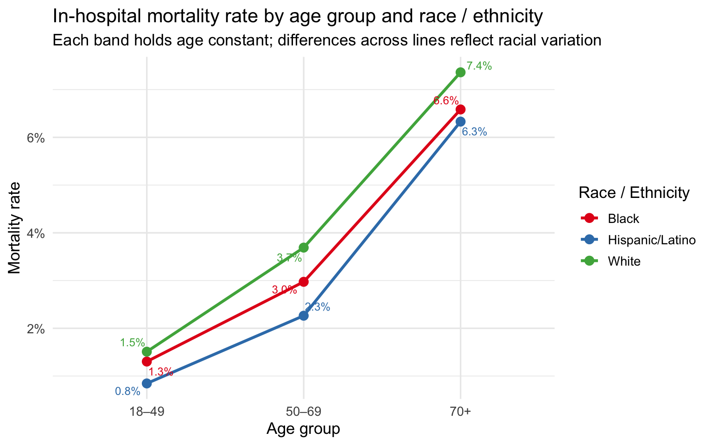
% Major or Extreme by Age Group and Race
Show code
sparcs_age |>
ggplot(aes(x = age_group, y = pct_major_ext,
color = race_eth, group = race_eth)) +
geom_line(linewidth = 1.1) +
geom_point(size = 3) +
geom_text_repel(aes(label = percent(pct_major_ext, accuracy = 1)),
size = 3.2, show.legend = FALSE) +
scale_y_continuous(labels = percent_format()) +
scale_color_brewer(palette = "Set1") +
labs(
title = "Share of Major / Extreme severity discharges by age group and race",
subtitle = "Higher share = more patients arriving at the most severe illness levels",
x = "Age group", y = "% Major or Extreme", color = "Race / Ethnicity"
)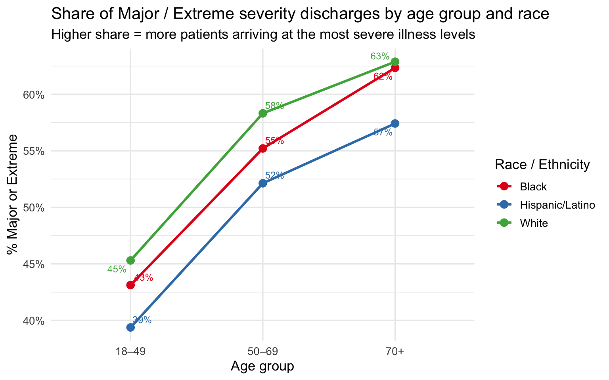
The age-stratified plots are the core evidence of this section. Across all three age bands, the racial ordering on severity, mortality, and share of Major/Extreme cases is consistent: Black patients at or near the top, White patients at or near the bottom, Hispanic/Latino patients in between. The gaps narrow somewhat at 70+, where severity scores converge as all groups accumulate serious illness burden — but they do not disappear. At 18–49, the comparison is especially striking: these are working-age patients with fewer accumulated comorbidities, yet Black and Hispanic/Latino patients still arrive at higher severity levels and die at higher rates than White patients of the same age.
The persistence of the severity and mortality gaps after controlling for age points to something happening before the patient reaches the hospital. One hypothesis — consistent with the broader group project — is that clinical tools used earlier in the care pathway are less accurate for darker-skinned patients, allowing conditions to deteriorate further before they are detected and treated. That upstream failure, whatever its source, would produce exactly the pattern seen here: higher severity at admission, longer stays, and higher mortality — not because these patients are intrinsically sicker, but because their illness was permitted to progress further before intervention.
Summary of Key Findings
| Finding | Evidence |
|---|---|
| Black patients arrive at higher severity | Higher mean APR severity score and larger share of Major/Extreme discharges than White or Hispanic/Latino patients in raw comparisons |
| The severity gap is not fully explained by diagnosis mix | Heatmap shows higher mean severity for Black patients within the same respiratory diagnosis |
| LOS gap persists within severity level | At every severity category, Black and Hispanic/Latino patients have equal or longer median stays than White patients at the same illness level |
| Racial ordering in mortality is consistent | In-hospital mortality rate follows the same ordering as severity: Black ≥ Hispanic/Latino ≥ White |
| Disparities hold after controlling for age | Age-stratified analysis shows the severity and mortality gap is present at 18–49, 50–69, and 70+, ruling out age as the primary explanation |
| The 18–49 band is the sharpest evidence | Among working-age patients with the fewest accumulated comorbidities, racial gaps in severity and mortality are still present — pointing to a pre-admission mechanism |
SPARCS is administrative data collected at discharge for billing and regulatory purposes. Severity scores are assigned by coders working from discharge records rather than by clinicians at the bedside. If earlier clinical failures cause a condition to deteriorate undetected before admission, the true disease burden may be understated by the coded severity score — meaning the observed disparities may actually underestimate the gap in illness progression before hospital arrival.